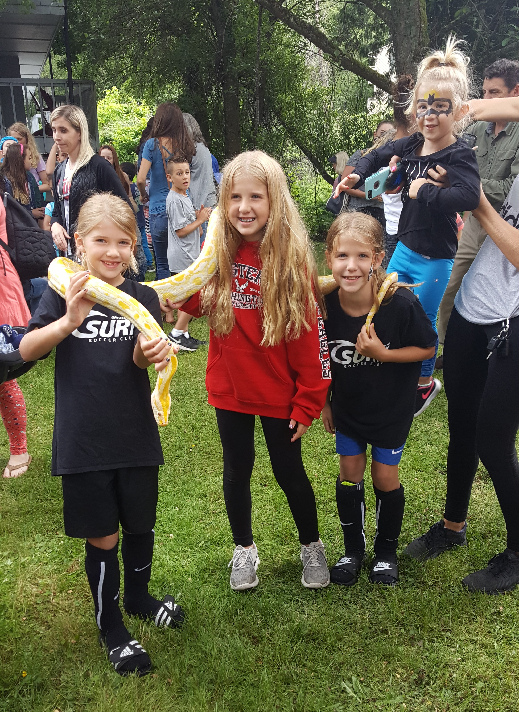
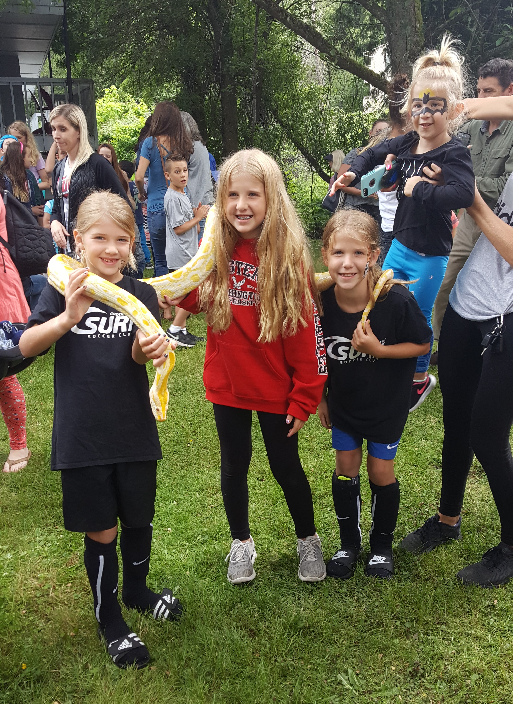

Second we have our Miss Payton Harle! Like I said before, and feel as if I need to say it again, she is a one real fire cracker!! Though don't misunderstand me when I say this because she is just a load of fun and always ready to go! Payton is a true dare devil who doesn't seem to be all too scared of anything. You'll find her riding her bike down her long steep driveway, sliding down the railing of the stairs, or swinging all across her playset. There is more to Payton than just her wild sense of nature, she is also extremely caring, often thinking of others and how she can help make them feel welcome and comfortable. Let's not forget either that Mom and Dad are in for some real trouble, just like the other three Harle girls, Payton is a beautiful and intelligent young lady.